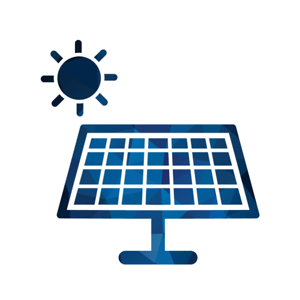
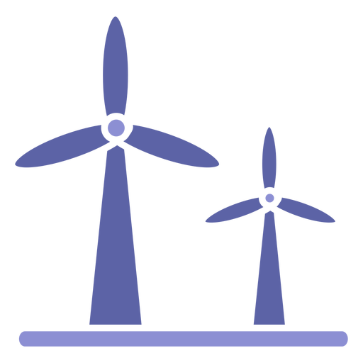

Quais métodos de energia são limpos e sustentáveis?
Nesta página você pode encontrar uma lista de métodos de energia limpa e sustentável! Leia para conhecer um pouco sobre cada uma delas!
-

Energia solar
Energia solar é um termo que se refere à energia proveniente da luz e do calor do Sol. É utilizada por meio de diferentes tecnologias em constante evolução, como o aquecimento solar, a energia solar fotovoltaica, a energia heliotérmica, a arquitetura solar e a fotossíntese artificial. Tecnologias solares são amplamente caracterizadas como ativas ou passivas, dependendo da forma como capturam, convertem e distribuem a energia solar. Entre as técnicas solares ativas estão o uso de painéis fotovoltaicos, concentradores solares térmicos das usinas heliotérmicas e os aquecedores solares. Entre as técnicas solares passivas estão a orientação de um edifício para o Sol, a seleção de materiais com massa térmica favorável ou propriedades translúcidas e projetar espaços que façam o ar circular naturalmente. -

Energia eólica
Energia eólica é a transformação da energia do vento em energia útil, tal como na utilização de aerogeradores para produzir eletricidade, moinhos de vento para produzir energia mecânica ou velas para impulsionar veleiros. A energia eólica, enquanto alternativa aos combustíveis fósseis, é renovável, está permanentemente disponível, pode ser produzida em qualquer região, é limpa, não produz gases de efeito de estufa durante a produção e requer menos terreno. O impacto ambiental é geralmente menos problemático do que o de outras fontes de energia. -
Energia maremotriz
Energia maremotriz ou energia das marés, é o modo de geração de energia por meio do movimento das marés. Dois tipos de energia maremotriz podem ser obtidos: energia cinética das correntes devido às marés e energia potencial pela diferença de altura entre as marés alta e baixa. O aproveitamento da energia das marés pode ser feito a partir de centrais elétricas que funcionam por ação da água dos mares. É necessária uma diferença de 7 metros entre a maré alta e a maré baixa para que o aproveitamento desta energia seja renovável. Atualmente na Europa existem pelo menos duas destas centrais: Uma no norte de França e outra na Rússia.